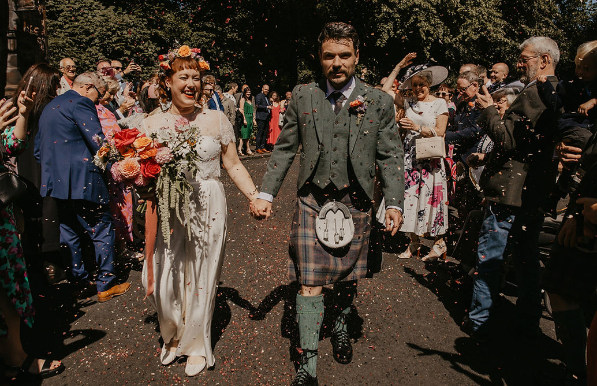
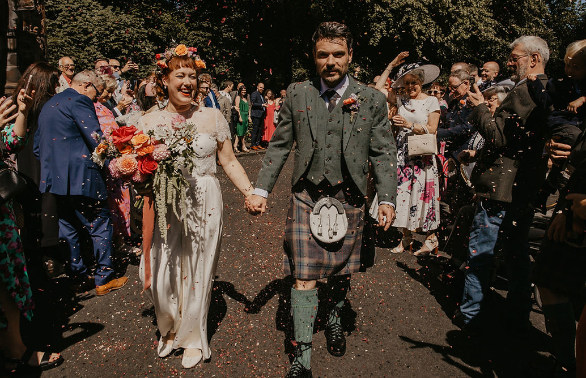

Hi, I’m Becky
— the florist behind starry skies. Originally from Northumberland, I now live in Glasgow’s southside with my husband and little girls, Stella (who inspired the name of the business) & Frankie. Working with flowers feels like a mix of art, nature and design — all the things I love most. In 2024, I opened my studio and shop on Battlefield Avenue, where I create wedding and event florals, and run the retail space for plants, flowers and gifts. It’s a calm, creative space where you’re always welcome to pop in and chat about flowers for any occasion. So feel free to pop in anytime and say hello! – Becky
- Season-led, foam-free where possible
- Clear, friendly communication
- Site visits & logistics handled

 
